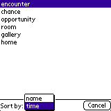

| |
Products | Downloads | Buy | Documentation | News | Support |
|
Download iNoah (either iNoah.prc file or iNoah.zip (which contains iNoah.prc)) and install iNoah.prc on the device. Make sure that your device has wireless, internet connection which is required for iNoah to work. iNoah is specifically optimized for Treo 600 smartphone. Keep in mind that this is still a beta version so we appreciate comments about encountered problems and suggestions on how to improve iNoah (write to support at arslexis.com).
| Upon startup iNoah displays by default About screen. |
In order to get a definition of a word, type the word in the text box and press "Go" button (or center button on Treo's 5-Way Navigator). |
|
iNoah will download word definition and display it on the screen. If a definition
doesn't fit on one screen it can be scrolled using hardware up/down buttons,
scrollbar or 5-Way Navigator's up/down buttons (available e.g. on Treo
or Tungsten). You can either scroll by line, half a page or the whole page
(depending on preferences). |
 Tapping twice directly on the word brings its definition.
Tapping twice directly on the word brings its definition.
|
A history of recently looked up words is available via "Recent lookups" menu. Other iNoah menu
options:
|
|  iNoah allows bookmarking words for future reference, deleting bookmarks and selecting a word from the list of bookmarked words. When viewing bookmarks, they can be sorted alphabetically (by name) or chronologically (by the time they were bookmarked, the most recently bookmarked words at the top). |
 It's possibly to copy a part of definition to clipboard and use it in other
application. To do that, select a part of definition to copy with a stylus
and select "Main\Copy to clipboard" menu item. If there is no selection,
the whole definition gets copied. You can then paste copied text in other
applications that support clipboard (e.g. Memo Pad).
It's possibly to copy a part of definition to clipboard and use it in other
application. To do that, select a part of definition to copy with a stylus
and select "Main\Copy to clipboard" menu item. If there is no selection,
the whole definition gets copied. You can then paste copied text in other
applications that support clipboard (e.g. Memo Pad). |
 Definition display is highly customizable. There are 3 different layout to
choose from. Font and color of each part of every layout can be changed.
Definition display is highly customizable. There are 3 different layout to
choose from. Font and color of each part of every layout can be changed.
|